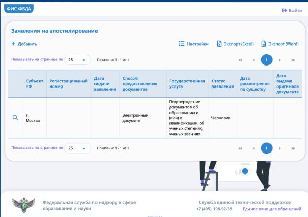

Документы
Апостиль диплома
Как получить бумажный апостиль на российский диплом: основной способ через Госуслуги и запасной вариант через ФИС ФБДА Рособрнадзора.
Как это работает
Госуслуги или ФИС ФБДА → загружаете скан диплома и приложения → ведомство проверяет документ → получаете уведомление → передаёте оригинал диплома и приложение в выбранное ведомство → на оригинал диплома или на прикреплённый к нему лист ставят бумажный апостиль.
Загруженный файл нужен для проверки. Сам бумажный апостиль ставится на оригинал документа.
Подача через Госуслуги
Откройте услугу
«Проставление апостиля на документах об образовании, учёных степенях, званиях»
«Начать»

Где выдан документ
«Документ для апостиля выдан российской организацией либо на территории РФ или РСФСР?»
Да / Нет
Вы являетесь обладателем документа
Да / Нет
Вы меняли ФИО
Нет / Да
Если ФИО в дипломе отличается от текущих, Госуслуги попросят указать прежние данные.
Что хотите получить
«Реестровую выписку и штамп апостиля» / «Реестровую выписку»
Для бумажного апостиля нужен первый вариант. Он предусматривает проставление апостиля на оригинале диплома или на отдельном листе, который скрепляют с оригиналом.
Если выбрать только «Реестровую выписку», бумажный апостиль на оригинал не ставится.

Как хотите получить штамп апостиля
«Лично в ведомстве» / «Почтовым отправлением наложенным платежом»
В этой инструкции используем личное получение: после проверки заявления оригинал диплома нужно будет передать в выбранное ведомство.
Вам нужна выписка на иностранном языке
Да / Нет
Для подачи диплома в Испании отдельная реестровая выписка на иностранном языке не нужна. Нужен сам диплом с бумажным апостилем.


Выберите регион подачи заявления
Выберите регион, в котором будет удобно передать оригинал диплома и получить готовый документ.
Госуслуги покажут конкретное ведомство, его адрес и контакты.

Что нужно для подачи заявления
На этом экране Госуслуги показывают, какие сведения понадобятся, стоимость и срок.
Госпошлина — 2 500 ₽.
На Госуслугах указан максимальный срок оказания услуги — 25 рабочих дней.

Проверьте ваши данные
Проверьте сведения, которые Госуслуги автоматически подставили из профиля, и продолжайте.
У вас есть номер записи ЕРН
Да / Нет
Если номер вам неизвестен, специально искать его ради подачи заявления не требуется.

Выберите документ для апостиля
Укажите уровень образования и тип документа.
После этого Госуслуги предложат выбрать документ из реестра.


Выберите страну предъявления документа
Испания

Загрузите документы
Загрузите все страницы диплома и все страницы приложения к нему.
Можно загрузить один файл в формате PDF или ZIP до 25 МБ.
Удобнее всего собрать всё в один PDF: диплом → все страницы приложения.
Сканы должны быть читаемыми, без обрезанных краёв и закрытых данных.

Отправьте заявление и оплатите госпошлину
После загрузки документов завершите заполнение формы и отправьте заявление.
Дальше следуйте инструкции в личном кабинете по оплате госпошлины 2 500 ₽. Точный порядок отображения оплаты может меняться, поэтому в инструкции не привязываемся к конкретному экрану после загрузки файлов.
Дождитесь уведомления
Ведомство проверит заявление и сведения о дипломе.
Сразу после отправки заявления ехать в ведомство не нужно. Дождитесь уведомления в личном кабинете Госуслуг.
Если для проверки понадобятся дополнительные сведения, общий срок может составить до 25 рабочих дней.
Передайте оригинал в ведомство
После уведомления принесите оригинал диплома и приложение в ведомство, которое выбрали при подаче заявления.
Именно на оригинал диплома или на отдельный лист, скреплённый с ним, будет поставлен бумажный апостиль.
После передачи оригинала апостиль проставляется в течение 5 рабочих дней.
Получите готовый документ
Заберите оригинал диплома с приложением и бумажным апостилем.
Реестровая выписка об апостиле придёт в электронном виде.
Если Госуслуги не работают: ФИС ФБДА Рособрнадзора
Заявление можно подать напрямую через ФИС ФБДА Рособрнадзора. Сам бумажный апостиль ставит выбранный региональный компетентный орган.
Откройте официальный сервис
Официальный сайт Рособрнадзора
Для самой подачи откройте личный кабинет ФИС ФБДА Рособрнадзора. Это официальный сервис на домене obrnadzor.gov.ru.
Если сервис не открывается из-за границы, на практике может понадобиться российский VPN.
Войдите через Госуслуги
Авторизация в ФИС ФБДА идёт через ЕСИА — используйте свою учётную запись Госуслуг.
После входа откроется раздел «Заявления на апостилирование». Нажмите «+ Добавить», чтобы создать новое заявление.

Заполните заявление
Укажите данные заявителя и диплома, образовательную организацию и страну предъявления документа — Испания.
В заявлении выберите субъект РФ и региональный орган, куда сможете передать оригинал диплома после проверки.
Подготовьте сканы
Для электронной подачи нужны качественные цветные сканы документа. Сканируйте все страницы диплома и приложения, включая оборотные стороны, если на них есть сведения.
Если ФИО в дипломе отличается от текущего, приложите документ о смене ФИО.
Оплатите госпошлину
Госпошлина — 2 500 ₽ за документ.
При подаче через ФИС ФБДА сохраните квитанцию об оплате. В практическом сценарии через реестр её прикладывают к заявлению; при временных сбоях Госуслуг региональные органы также прямо просят приложить квитанцию.
Загрузите документы и отправьте заявление
После оплаты вернитесь в заявление и приложите файлы, которые запросит форма. На практике это сканы диплома и приложения, а также подтверждение оплаты; в отдельных случаях система может запросить дополнительные сведения или документы.
Проверьте заявление и отправьте его.
Дождитесь решения
Компетентный орган проверит сведения о дипломе. Если данных достаточно, придёт уведомление о дальнейшем порядке передачи оригинала.
Максимальный срок рассмотрения — 25 рабочих дней.
Передайте оригинал диплома
Для бумажного апостиля оригинал всё равно нужно представить в выбранный региональный орган.
После представления оригинала бумажный апостиль проставляется в течение 5 рабочих дней. Апостиль ставят непосредственно на документ либо на отдельный лист, который скрепляют с оригиналом.
Получите готовый диплом
Заберите диплом с бумажным апостилем. После этого для подачи в Испании делается присяжный перевод диплома, приложения и самого апостиля.
Источники
Правила подтверждения документов об образовании и квалификации
Официальная информация регионального органа о подаче через Госуслуги и ФИС ФБДА